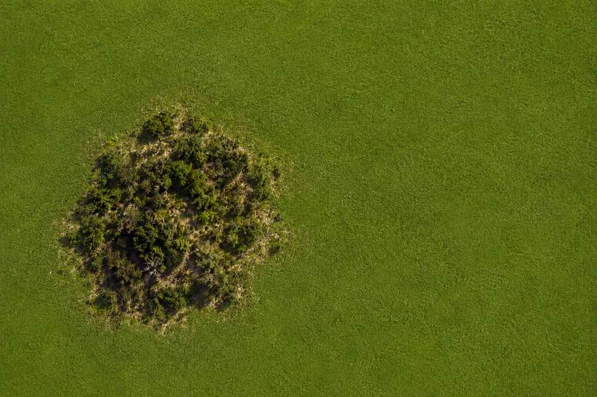

Home > Critical notes > From Quisquiza (12 of 20)
From Quisquiza (12 of 20)
Monoculture
When One Grass Wins
This note is part of a series written from Quisquiza, in the high-Andean cloud forest of Colombia, where ecological restoration and research now unfold side by side. It reflects on how living and working within this terrain gradually reshapes the way I think about memory, information, and the infrastructures built to sustain them. Check all the notes in this section's index.
There are parts of my land where one grass has won.
Kikuyu grass, of course. That son-of-a...
It covers the slope in a dense, continuous layer, pushing through old pasture, wrapping itself around stones, climbing over drainage channels, and advancing into any patch of ground left unattended for more than a few weeks.
(It does not believe in unattended ground. Why would it?)
From a distance, the result looks almost admirable. The surface is smooth. Orderly. Efficient. The same Pantone shade of green everywhere, stretched over the hillside like a carefully installed carpet. No visible gaps. No exposed soil. No apparent hesitation.
For anyone who believes that coverage is evidence of health, it looks perfect. Up close, however, the landscape becomes quieter than it should be.
There are fewer mushrooms beneath it — if any. Fewer insects moving between the stems. Almost none of my favourite beetles, which I consider a serious institutional failure. (Some little snakes are happy, though.) Small plants, dandelions and family, appear at the edges but rarely survive in the middle. Seeds germinate and then disappear beneath the grass. Fallen leaves become trapped in a dense layer that decomposes unevenly.
The soil underneath begins to tighten. The roots form a thick, tangled mat near the surface. Water sometimes runs across it instead of entering, I swear. In other places, moisture remains trapped beneath the vegetation, cold and poorly aerated. The grass holds the ground, certainly, but it also occupies nearly every available opening.
What thrives in uniformity often excludes whatever might complicate it.
Kikuyu is not evil. (Well, maybe a little...) That would make things simpler, and ecosystems rarely have much interest in simplicity. It grows quickly, it protects exposed soil, its roots reduce erosion on steep slopes... Cattle can graze it. It survives cutting, trampling, cold nights, poor treatment, and the repeated decisions of humans who assume that vegetation will manage itself.
It is very good at what it does. And that is precisely the problem. Success at one function can conceal the loss of many others.
Where one species dominates, landscape structure becomes simpler. The same root depth repeats across the slope. The same height. The same seasonal rhythm. The same response to rain, cold, drought, grazing, and disturbance.
There may be a great deal of biomass. There is considerably less possibility.
A more varied patch contains plants with different roots, different flowering periods, different relationships with insects and fungi, different capacities to retain water, loosen soil, accumulate organic matter, provide shade, or survive an unexpected dry spell.
Some grow quickly. Others wait. Some tolerate cold. Others recover better after damage. Some provide food. Some create shelter. Some do almost nothing visible until the conditions change and their presence suddenly becomes essential.
Diversity is untidy because life distributes work badly from the perspective of a spreadsheet.
It duplicates functions, leaves empty spaces, produces organisms that seem unnecessary, and maintains relationships whose usefulness may not become apparent for years.
Monoculture removes much of that apparent inefficiency. One species performs one set of functions across the entire surface. Maintenance becomes easier, growth becomes predictable, and the landscape can be read quickly. From above, it resembles a solved problem.
Until conditions change.
A disease adapted to that species does not need to search far for its next host. Trust me. A drought affecting one root structure affects every root structure. A change in temperature, soil chemistry, or water availability encounters the same biological response again and again.
Uniformity reduces friction during ordinary conditions. It also distributes the same vulnerability everywhere. And this is not only an agricultural problem — it is a structural one.
Institutions also cultivate monocultures.
One cataloguing tradition. One language of description. One model of evidence. One definition of authority. One approved vocabulary. One technical platform. One method for evaluating usefulness. One professional pathway repeated until it becomes indistinguishable from the terrain itself.
From a distance, these systems look orderly. Records align, procedures accelerate, training becomes easier, interoperability improves, and reports can be produced without anyone having to explain why one part of the collection behaves differently from another. Everything is the same shade of administrative green.
Up close, though, the silence becomes more noticeable.
Questions that cannot be expressed in the dominant vocabulary are not asked. Forms of knowledge that require different relationships, temporalities, or evidentiary structures remain at the edges. Local categories germinate briefly and then disappear beneath the established system. Alternative practices survive only in neglected corners, usually maintained by people whose work is considered informal, inefficient, or insufficiently standardized.
(Some little snakes are happy, though. You know the ones.)
The institution may contain millions of records and still support only a narrow range of thought.
Intellectual monocultures work in much the same way. A field organizes itself around a handful of theories, methods, journals, languages, institutions, and citation networks. Those structures become efficient at reproducing themselves. Researchers learn which questions receive funding, which vocabulary sounds serious, which evidence counts, and which disagreements can be safely expressed without threatening their place in the system.
Nothing has to be prohibited explicitly. The dominant grass simply occupies the available space.
New ideas then face a peculiar difficulty. They are not always rejected because they are wrong. Sometimes they cannot establish themselves because the ground is already covered. There is no light, no opening, no institutional moisture left for anything with a different growth habit.
Standardization increases coordination. It can protect continuity, reduce confusion, and allow work to move across institutions.
But coordination is not the same as resilience. A system becomes resilient when it can sustain difference without treating every variation as a defect. When several kinds of knowledge can anchor at different depths. When one method can fail without taking the entire field with it. When apparently redundant practices remain available because nobody knows which conditions will arrive next.
On my slope, the kikuyu continues advancing. I pull some of it out. It returns. I cover patches with leaves and branches. It pushes through. I plant other species in the openings, protect them from the cold, loosen the soil around their roots, and watch the grass approach from all directions with the calm confidence of an empire that has never encountered a border it respected.
This is not a war. I would certainly lose. The task is slower and less dramatic: interrupt the uniformity. Open small spaces. Change the conditions. Allow other roots, other heights, other rhythms, and other forms of life (including my beetles) to establish themselves before the grass closes over the surface again.
A monoculture does not need to destroy everything in order to dominate. It only needs to make everything else increasingly difficult. When it gets it, and it always does, the slope remains green for a while. The system looks stable.
Until the conditions change. And all that beautiful uniformity discovers that it has only one answer.